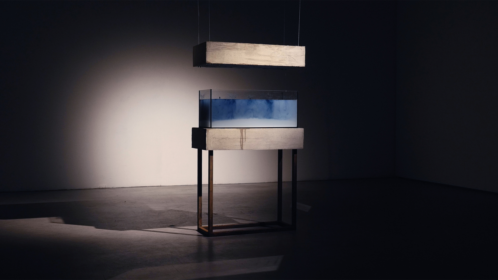
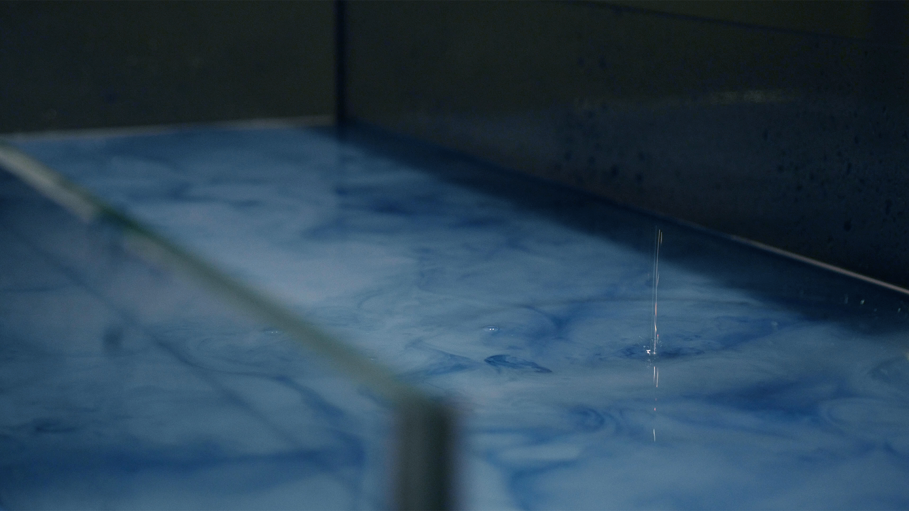
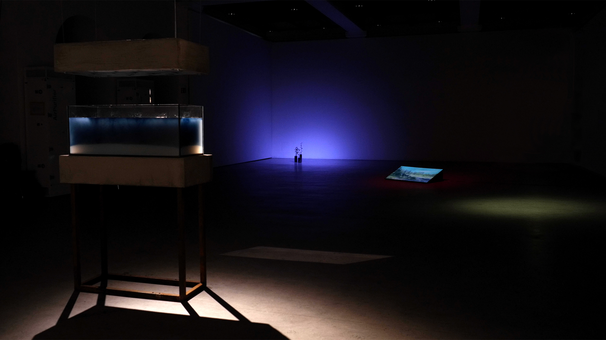
 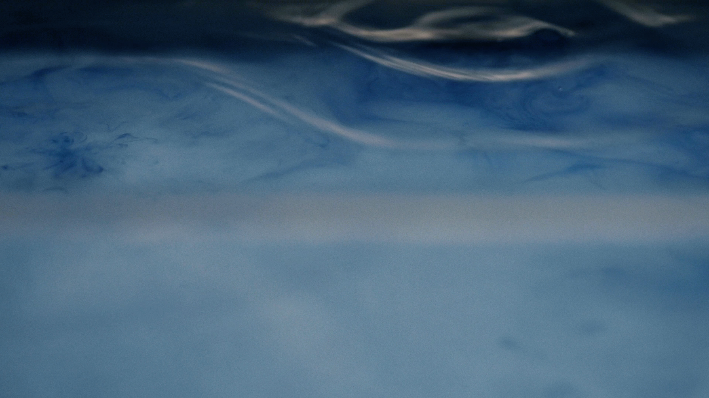
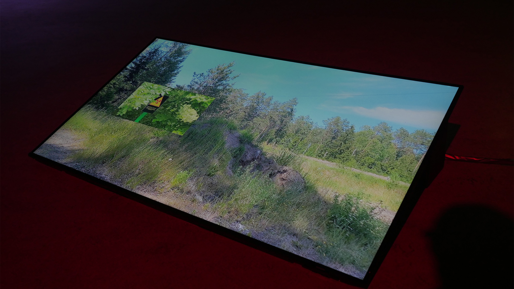
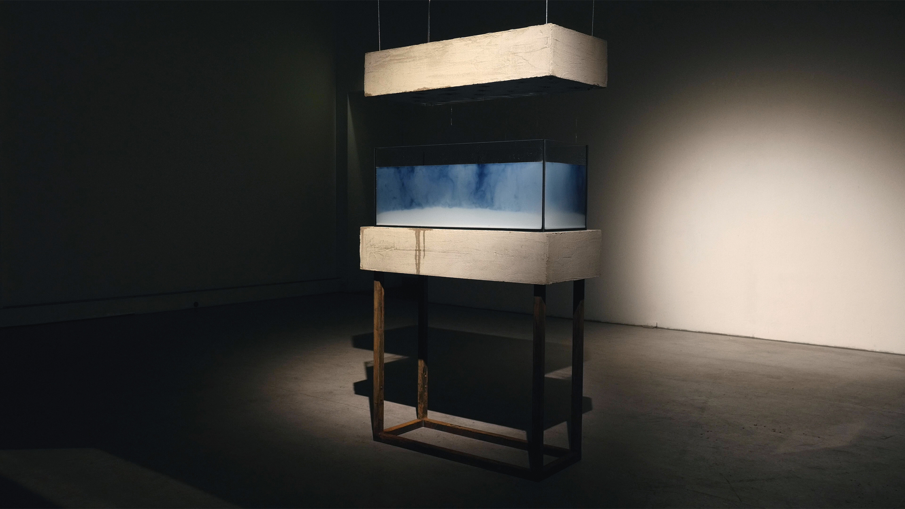
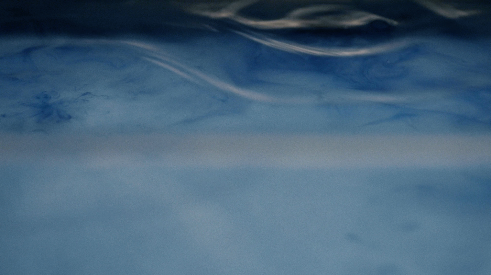
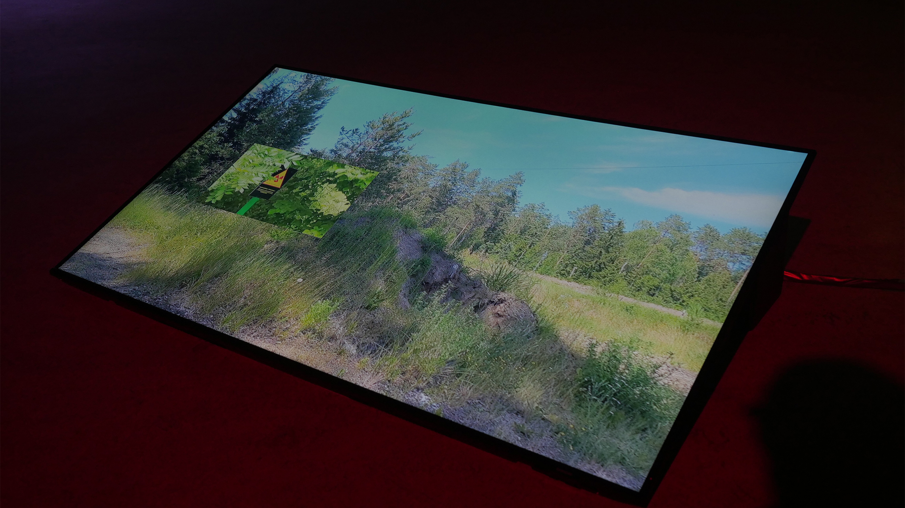
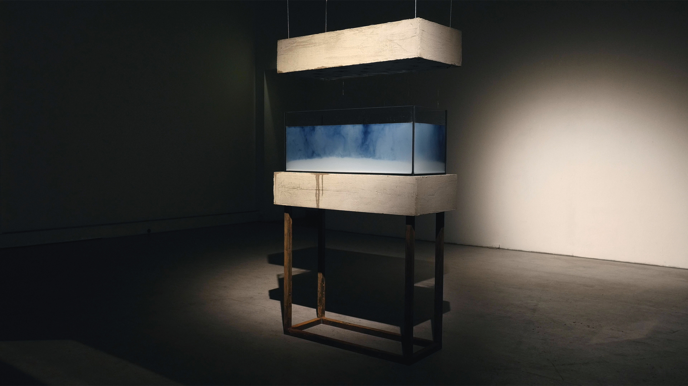
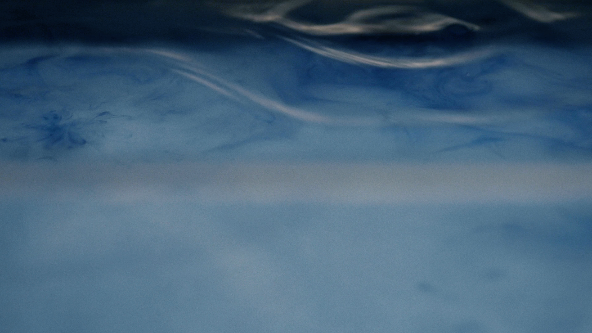
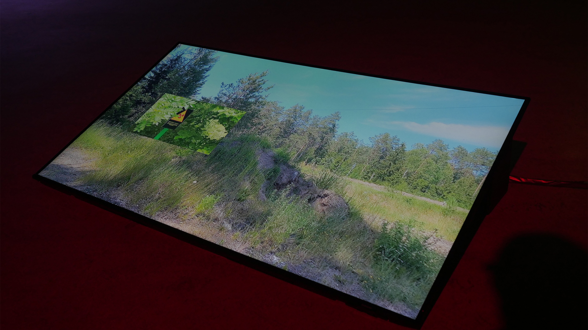
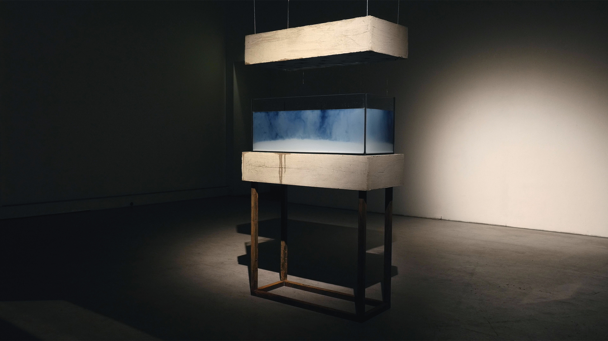
The discovery of radiation helped unlock the deep time of present and future. The deep future connects us to the unknown — how long will it take for radiation pollution to decay? From various nuclear tests and technogenic catastrophes, connections exist between the nuclear, the cosmic and the planetary, with particles of radioactive dust spreading into the soil and air around the Earth.
Russia's full-scale invasion of Ukraine, unlocked a critical time in recent history, with the exclusion zone around the Charnobyl nuclear power plant once again becoming a site of greater relevance for the present and future of life on Earth. Now, the land of Ukraine is being contaminated with chemicals from rockets and mines, like pollution from the explosion at Charnobyl in 1986 was spread around the globe and is still found in fungi, animals and food supply chains today.
After the explosion at Charnobyl, one of the radioactive elements released to the ecosphere was Iodine-131. Even though this element is one of the fastest to decay, with a half-life of 8 days, it is still very dangerous. Following the catastrophe, Iodine supplements should have been introduced into people's diets, so Iodine-131 wouldn't be absorbed. While Iodine-131 can destroy all or part of the thyroid gland, Iodine itself remains a very important element for the well-being of living systems. At the same time Iodine-131 is used to treat thyroid cancer.
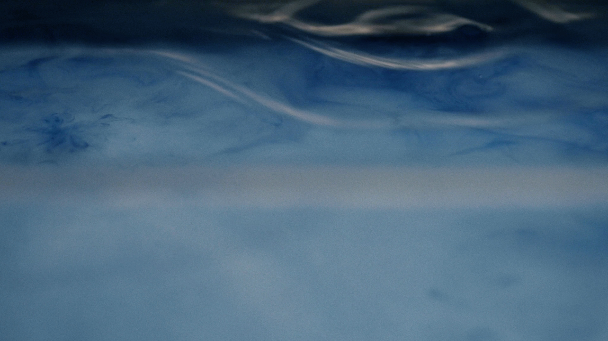
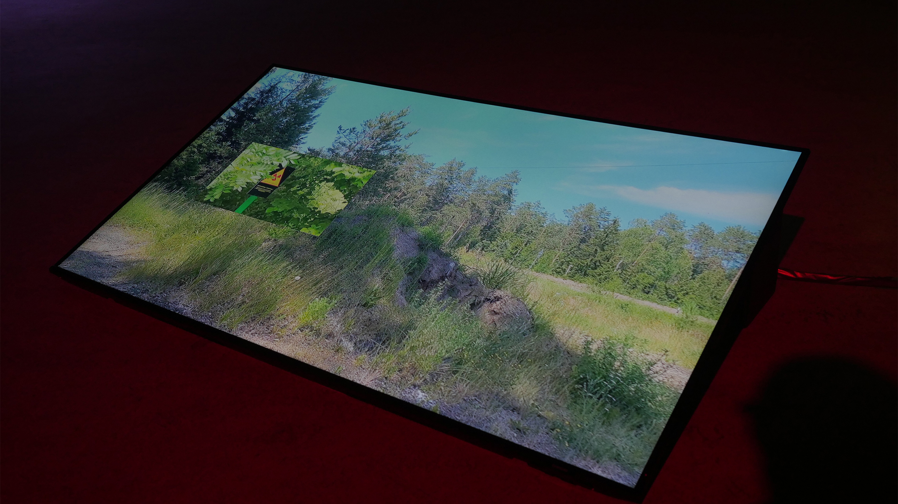
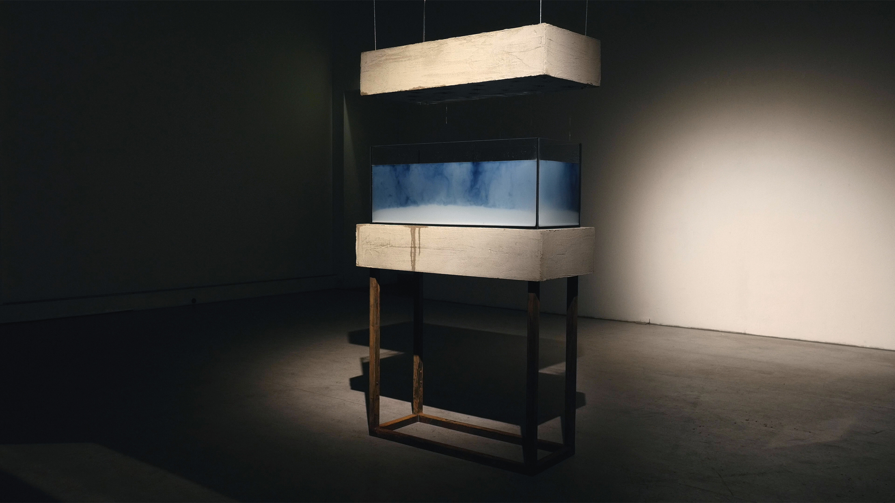
The aim of this project is to uncover the entanglements of nuclear technology and show an advanced laboratory of the consequences and long-term legacies of irradiated waste colonialism. The project consists of 4 parts: The Iodine time-machine installation, the "Rooting: search for a sign" video piece, potato plants and a written collection of personal stories and other histories.
The installation consists of an aquarium filled with a water-starch solution. Suspended above, a concrete box contains valves connected to a water tank with an Iodine-water solution. When this water drops into the aquarium, the Iodine reacts with the starch, turning the water a blue-violet colour. It is a time-machine, which shows the extended time of radiation decay and pollution degradation, as well as the impossibility of dealienation of the Exclusion zone.
The video piece tells a story of the search for a Radiation sign in Minsk region, where remnants of Charnobyl's radioactive legacy still persist. The footage captures Belarusian landscapes, from potato and corn fields to village houses, where radiation sits deep in the soil, spreading around through roots of vegetables.
Potato plants symbolise the source of potato starch and are also a connection to roots and earth. They represent one of the stories from Rooting, also reflecting the historical significance of the potato in European culture and can be traced as marker of the Anthropocene.
The written part consists of 5 main pieces: “Isotopes of the past”, “Zones”, “Core of the nucleus”, “Rooting”, “Dealienation”. It is a collection of personal stories like “Mushroom picking stories”, memories of my family members, a translation of a story written by my grandmother's brother, historical information and an overview of the topics of radiation, colonialism, war and contamination.
J22 jahresausstellung hfk- 11 nov - 16 nov 2022-- blg forum, bremen
frieze design award 2022- jury mention
cookbook for a time-machine, dynamic archive 2023 read